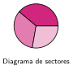

Apartado 11.4
Gráficos estadísticos
La representación gráfica de los datos estadísticos permite visualizar de forma rápida e intuitiva la distribución de las frecuencias y las características principales de la muestra estudiada.
 |
11.4.1
Resuelve las siguientes cuestiones sobre gráficos:
- En una clase de 30 alumnos, 12 tienen el pelo castaño, 9 moreno, 6 rubio y 3 pelirrojo. Calcula los grados correspondientes a cada uno de los sectores para poder dibujar el diagrama de sectores de esta variable.
- Se han medido las estaturas (en cm) de un grupo de personas agrupándolas en los siguientes intervalos: \([150, 160)\), \([160, 170)\) y \([170, 180)\). ¿Qué tipo de gráfico estadístico sería el más adecuado para representar estos datos? Justifica brevemente tu respuesta.